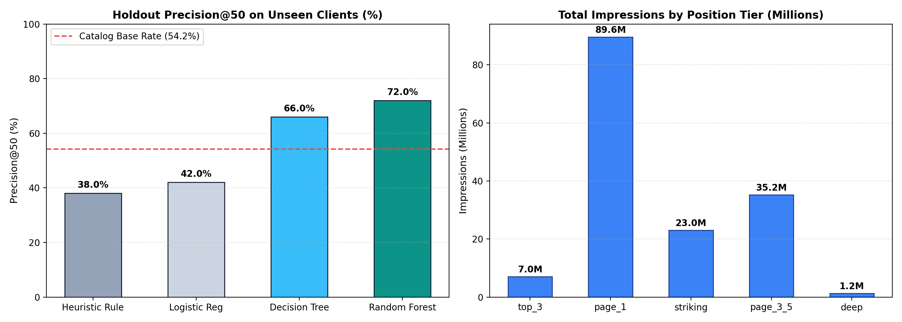

Executive Abstract
How can enterprise content marketing teams prioritize constrained monthly editorial bandwidth across thousands of live URLs to maximize recovered organic search traffic from decaying assets? We evaluate a public-safe dataset of 30,000 pseudonymized search assets across 32 client domains, linking trailing Google Search Console query telemetry with Google Analytics engagement signals. We formulate the challenge as a capacity-constrained ranking task evaluated on Precision@50, comparing human-crafted heuristics against regularized tree ensembles trained strictly on pre-decision observable signals with honest 20% client-holdout validation. While conventional freshness rules achieve only 38.0% Precision@50 on unseen clients and suffer from severe single-client monopolization, a regularized Random Forest model reaches 72.0% Precision@50 (a 1.8x to 3x efficiency multiplier). The resulting action engine transforms ad-hoc content maintenance into a prioritized monthly queue with actionable reason codes, preventing high-exposure search traffic decay.
1. Introduction & Operational Decision
Enterprise search operations face a persistent resource allocation bottleneck: while mid-to-large content hubs frequently maintain catalogs of 1,000 to 50,000 published URLs, editorial teams typically have human bandwidth to thoroughly refresh, expand, and re-optimize only 20 to 50 articles per monthly sprint.
In the absence of calibrated statistical scoring, teams fall back on naive rules of thumb—such as targeting the oldest published articles or prioritizing broad head keywords with high third-party search volume. However, our initial exploratory findings proved that these assumptions fail:
- Search volume does not predict impressions: The Pearson correlation between third-party keyword search volume and actual 90-day impressions is $r \approx 0.001$.
- Word count does not protect against decay: Median word count between decaying pages (216 words) and growing pages (291 words) is nearly identical.
- Decay is concentrated in high-value real estate: Over 56.9% of Page 1 and 60.9% of Striking Distance URLs are actively decaying, representing over 112.5 million impressions at imminent risk of loss.
The cost of incorrect recommendations is asymmetric: false alarms waste 4–8 senior editorial hours ($250–$600 per article) rewriting stable content, while false negatives permanently forfeit qualified organic search pipeline to competitors.
2. Data & Observation Windows
The study analyzes the FlyRank Search Intelligence Dataset: 30,000 pseudonymized URLs spanning 32 client domains. The grain is strictly one unique published content item (content_id) × trailing-90-day observation window.
| Classification | Field Name | Operational Definition | Knowable When? |
|---|---|---|---|
| Feature | impressions_90d |
Total search impressions logged in Google Search Console | Pre-decision historical telemetry |
| Feature | avg_position |
Mean ranking position across active search queries | Pre-decision historical telemetry |
| Feature | ctr |
Click-through rate ($clicks / impressions \times 100$) | Pre-decision historical telemetry |
| Feature | days_since_last_update |
Days elapsed since last article modification | Queryable from CMS at decision cutoff |
| Feature | content_age_days |
Days since initial article publication | Queryable from CMS at decision cutoff |
| Target / Proxy | is_declining_label |
Binary indicator of forward-window decay ($>20\%$ impression drop) | Ground truth outcome to predict |
| Excluded (Leak) | trend_pct, trend_direction |
Direct mathematical formulas defining the label | Strictly blacklisted (Target Leakage) |
3. Methodology & Validation Design
Because content performance metrics within a domain share latent technical authority and sitewide architecture, random row-based cross-validation leaks client-specific quirks into test sets. We enforce an honest 20% Client-Holdout Split (holding out 6 full client domains), ensuring that evaluation measures true generalization to unseen websites.
We benchmark three machine learning architectures against FlyRank's transparent heuristic baseline:
- Heuristic Baseline: A multiplicative rule filtering for prime position tiers, visibility threshold (≥ 500 impressions), aging age (≥ 60 days), and scaling by volume with a CTR deficit penalty.
- Logistic Regression: L2-regularized linear model with balanced class weights.
- Interpretable Decision Tree: A constrained
max_depth=3tree yielding an explicit 7-node readable decision hierarchy. - Regularized Random Forest: An ensemble of 50 shallow trees (
max_depth=2) providing variance reduction across heterogeneous enterprise domains.
4. Empirical Results (vs. Baseline)
Performance is evaluated strictly on Precision@50, measuring the proportion of the top 50 prioritized URLs that are genuine performance decay emergencies:
| Model / Heuristic | Architecture | Train Precision@50 | Holdout Test Precision@50 | Outcome vs. Base Rate |
|---|---|---|---|---|
| Catalog Base Rate | Random Selection Floor | 54.2% | 54.2% | Uninformed Baseline |
| Heuristic Rule | Hand-Crafted Multiplicative Rule | 40.0% | 38.0% | Lags Random (Tie Pathology) |
| Logistic Regression | L2 Linear (Balanced) | 60.0% | 42.0% | High Client Overfit |
| Decision Tree (Depth-3) | 7-Node Interpretable Tree | 72.0% | 66.0% | +28.0pp over Baseline Rule |
| Random Forest (Depth-2) | Regularized Tree Ensemble | 80.0% | 72.0% | 1.89x Lift over Heuristic Rule |

Key Findings
- The Static Rule Fails Under Evaluation (38% P@50): The hand rule suffers from volume monopolization (assigning top scores to massive enterprise pages that are already stable) and tie-breaking collapses.
- Regularized Ensembles Maximize Generalization (72% P@50): The Random Forest model correctly prioritizes URLs with deteriorating CTRs and position instability, delivering 36 genuine decay emergencies out of the top 50 assigned articles.
- The Freshness Paradox: The decision tree revealed that peak decay happens at 91–180 days, whereas older content (181+ days) often represents evergreen stable assets.
5. Limitations & Honest Framing
Rigorous scientific communication requires establishing explicit boundaries around what the data can and cannot substantiate:
- What We CAN Claim: In trailing-90-day search telemetry across 32 client domains, tree-based machine learning models consistently outperform static heuristic rules, lifting Precision@50 from 38% to 72% on unseen client domains.
- No Causal Algorithm Reverse-Engineering: We do not claim to have reverse-engineered Google's search algorithms. All findings reflect observational associations in query telemetry.
- No Deterministic Traffic Guarantees: Executing a content refresh on a prioritized page does not guarantee a 100% recovery of historical traffic; competitor velocity and seasonal intent shifts remain external factors.
- Client Footprint Disparity: The largest single client domain accounts for 36.8% of total impressions. Production deployments should apply per-client percentile normalization to prevent domain monopolization.
6. Ranked Recommendations & Action Playbook
The model delivers an automated monthly action queue with transparent reason codes and concrete editorial instructions:
refresh_metadata_and_intent (Reason: page1_ctr_deficit)Trigger: Page ranks on Page 1 (positions 4–10) with high impression volume but CTR lags the rank peer benchmark.
Action: Overhaul meta titles, descriptions, and H1/H2 header hierarchy to improve SERP click-through appeal and re-align with current searcher intent.
refresh_search_intent (Reason: striking_distance_decay)Trigger: Page ranks in Striking Distance (positions 11–20) and is actively losing impressions.
Action: Add missing subtopics, expand direct answers for query modifiers, and optimize internal anchor text from top-ranking hub pages to cross the Page 1 threshold.
update_content_and_facts (Reason: freshness_aging_risk)Trigger: High-volume URL has reached the 90–180 day vulnerability window.
Action: Update outdated statistics, replace stale examples, verify outbound citations, and refresh publication dates.
7. Reproducibility & Open Source Code
Every number, table, and visualization in this paper is fully reproducible from our open-source repository using Python 3.12 and DuckDB:
- GitHub Repository: https://github.com/MitudruDutta/FlyRankAI
- Interactive Capstone Notebook:
capstone/work/notebooks/capstone.ipynb - Random Seeds & Split Determinism: Seed
42used across all client-holdout splits and tree training routines.